실내건축산업기사 (2019-04-27 기출문제)
1과목: 실내디자인론
1. 실내기본요소 중 바닥에 관한 설명으로 옳지 않은 것은?
- 공간을 구성하는 수평적 요소이다.
- 촉각적으로 만족할 수 있는 조건을 요구한다.
- 고저차를 통해 공간의 영역을 조정할 수 있다.
- 다른 요소들에 비해 시대와 양식에 의한 변화가 현저하다.
(정답률: 85%)

2. 부엌 작업대의 배치유형 중 작업대를 부엌의 중앙공간에 설치한 것으로 주로 개방된 공간의 오픈 시스템에서 사용되는 것은?
- 일렬형
- 병렬형
- ㄱ자형
- 아일랜드형
(정답률: 92%)
3. 균형에 관한 설명으로 옳지 않은 것은?
- 대칭적 균형은 가장 완전한 균형의 상태이다.
- 비정형 균형은 능동의 균형, 비대칭 균형이라고도 한다.
- 균형은 정적이든 동적이든 시각적 안정성을 가져올 수 있다.
- 대칭적 균형은 비정형 균형에 비해 자연스러우며 풍부한 개성 표현이 용이하다.
(정답률: 85%)
4. 다음의 실내디자인의 제반 기본조건 중 가장 우선시 되는 것은?
- 정서적 조건
- 기능적 조건
- 심미적 조건
- 환경적 조건
(정답률: 85%)
5. 형태의 지각에 관한 설명으로 옳지 않은 것은?
- 대상을 가능한 한 복합적인 구조로 지각하려 한다.
- 형태를 있는 그대로가 아니라 수정된 이미지로 지각하려 한다.
- 이미지를 파악하기 위하여 몇 개의 부분으로 나누어 지각하려 한다.
- 가까이 있는 유사한 시각적 요소들은 하나의 그룹으로 지각하려 한다.
(정답률: 65%)
6. 디자인의 요소 중 면에 관한 설명으로 옳은 것은?
- 면 자체의 절단에 의해 새로운 면을 얻을 수 있다.
- 면이 이동한 궤적으로 물체가 점유한 공간을 의미한다.
- 점이 이동한 궤적으로 면의 한계 또는 교차에서 나타난다.
- 위치만 있고 크기는 없는 것으로 선의 한계 또는 교차에서 나타난다.
(정답률: 73%)
7. 다음 설명에 알맞은 사무소 건축의 코어형식은?
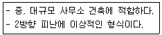
- 외코어형
- 중앙코어형
- 편심코어형
- 양단코어형
(정답률: 86%)
8. 조명의 눈부심에 관한 설명으로 옳지 않은 것은?
- 광원이 시선에 멀수록 눈부심이 강하다.
- 광원의 휘도가 클수록 눈부심이 강하다.
- 광원의 크기가 클수록 눈부심이 강하다.
- 배경이 어둡고 눈이 암순응될수록 눈부심이 강하다.
(정답률: 77%)
9. 다음 중 실내공간계획에서 가장 중요하게 고려해야 할 사항은?
- 인간 스케일
- 조명 스케일
- 가구 스케일
- 색체 스케일
(정답률: 90%)
10. 다음의 설명에 알맞은 조명 연출기법은?
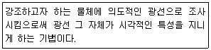
- 실루엣 기법
- 월 워싱 기법
- 글레이징 기법
- 빔 플레이 기법
(정답률: 84%)
11. 수평 블라인드로 날개의 각도, 승각으로 일광, 조망, 시각의 차단정도를 조절하는 것은?
- 롤 블라인드
- 로만 블라인드
- 버티컬 블라인드
- 베니션 블라인드
(정답률: 69%)
12. 실내 치수 계획으로 가장 부적절한 것은?
- 주택 출입문의 폭 : 90cm
- 부엌 조리대의 높이 : 85cm
- 주택 침실의 반자높이 : 2.3m
- 상점 내의 계단 단높이 : 40cm
(정답률: 77%)
13. 상품의 유효진열범위에서 고객의 시선이 자연스럽게 머물고, 손으로 잡기에도 편한 높이인 골든 스페이스(Golden Space)의 범위는?
- 50~850mm
- 850~1250mm
- 1250~1400mm
- 1450~1600mm
(정답률: 89%)
14. 세포형 오피스(cellular type office)에 관한 설명으로 옳지 않은 것은?
- 연구원, 변호사 등 지식집약형 업종에 적합하다.
- 조직구성원간의 커뮤니케이션에 문제점이 있을 수 있다.
- 개인별 공간을 확보하여 스스로 작업공간의 연출과 구성이 가능하다.
- 하나의 평면에서 직제가 명확한 배치로 상하급의 상호감시가 용이하다.
(정답률: 72%)
15. 다음과 같은 단면을 갖는 천장의 유형은?
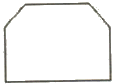
- 나비형
- 단저형
- 경사형
- 꺽임형
(정답률: 80%)
16. 다음 중 단독주택의 현관 위치 결정에 가장 주된 영향을 끼치는 것은?
- 가족 구성
- 도로의 위치
- 주택의 층수
- 주택의 건폐율
(정답률: 89%)
17. 다음 설명에 알맞은 건축화 조명의 종류는?
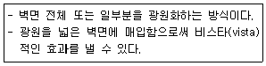
- 코퍼조명
- 광창조명
- 코니스조명
- 광천장조명
(정답률: 76%)
18. 필요에 따라 가구의 형태를 변화시킬 수 있어 고정적이면서 이동적인 성격을 갖는 기구로, 규격화된 단일가구를 원하는 형태로 조합하여 사용할 수 있으므로 다목적으로 사용이 가능한 것은?
- 유닛가구
- 가동가구
- 원목가구
- 붙박이가구
(정답률: 85%)
19. 실내디자인 과정 중 공간의 레이아웃(lay out)단계에서 고려해야 할 사항으로 가장 알맞은 것은?
- 동선계획
- 설비계획
- 입면계획
- 색채계획
(정답률: 86%)
20. 상품을 판매하는 매장을 계획할 경우 일반적으로 동선을 길게 구성하는 것은?
- 고객 동선
- 관리 동선
- 판매종업원 동선
- 상품 반출입 동선
(정답률: 91%)
2과목: 색채 및 인간공학
21. 골격의 기능으로 볼 수 없는 것은?
- 인체의 지주
- 내부의 장기보호
- 신경계통의 전달
- 골수의 조혈기능
(정답률: 75%)
22. 실내표면에서 추천 반사율이 가장 높은 곳은?
- 벽
- 바닥
- 가구
- 천장
(정답률: 68%)
23. Pictorial graphics에서 “금지”를 나타내는 표시방식으로 적합한 것은?
- 대각선으로 표시
- 삼각형으로 표시
- 사각형으로 표시
- 다이아몬드로 표시
(정답률: 81%)
24. 두 소리의 강도(强度)를 압력으로 측정한 결과 나중에 발생한 소리가 처음보다 압력이 100배 증가하였다면 두 음의 강도차는 몇 dB인가?
- 40
- 60
- 80
- 100
(정답률: 58%)
25. 인지특성을 고려한 설계 원리가 아닌 것은?
- 가시성
- 피드백
- 양립성
- 복잡성
(정답률: 47%)
26. 인체의 구조에 있어 근육의 부착점인 동시에 체격을 결정지으며 수동적 운동을 하는 기관은?
- 소화계
- 신경계
- 골격계
- 감각기계
(정답률: 86%)
27. 제어표시체계에 대한 설명으로 틀린 것은?
- 부착면을 달리한다.
- 대칭면으로 배치한다.
- 전체의 색상을 통일한다.
- 표시나 제어 그래프는 수직보다 수평으로 간격을 띄우는 것이 좋다.
(정답률: 72%)
28. 다음과 같은 착시현상과 가장 관계가 깊은 것은?
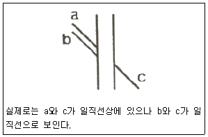
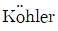
의 착시(윤곽착오)- Hering의 착시(분할착오)
- Poggendorf의 착시(위치착오)
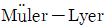
의 착시(동화착오)
(정답률: 72%)
29. 근육의 국부적인 피로를 측정하기 위한 것으로 가장 적합한 것은?
- 심전도(EDG)
- 안전도(EOG)
- 뇌전도(EEG)
- 근전도(EMG)
(정답률: 81%)
30. 인간공학적 산업디자인의 필요성을 표현한 것으로 가장 적절한 것은?
- 보존의 편리
- 효능 및 안전
- 비용의 절감
- 설비의 기능 강화
(정답률: 77%)
31. 색의 지각과 감정효과에 관한 설명으로 틀린 것은?
- 색의 온도감은 빨강, 주황, 노랑, 연두, 녹색, 파랑, 하양 순으로 파장이 긴 쪽이 따뜻하게 지각된다.
- 색의 온도감은 색의 삼속성 중 명도의 영향을 많이 받는다.
- 난색계열의 고채도는 심리적 흥분을 유도하나 한색계열의 저채도는 심리적으로 침정된다.
- 연두, 녹색, 보라 등은 때로는 차갑게 때로는 따뜻하게 느껴질 수도 있는 중성색이다.
(정답률: 62%)
32. 다음 중 감산혼합을 바르게 설명한 것은?
- 2개 이상의 색을 혼합하면 혼합한 색의 명도는 낮아진다.
- 가법혼색, 색광혼합이라고도 한다.
- 2개 이상의 색을 혼합하면 색의 수에 관계없이 명도는 혼합하는 색의 평균 명도가 된다.
- 2개 이상의 색을 혼합하면 색의 수에 관계없이 무채색이 된다.
(정답률: 58%)
33. 다음 ()에 들어갈 용어를 순서대로 짝지은 것은?
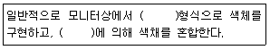
- RGB-가법혼색
- CMY-가법혼색
- Lab-감법가법혼색
- CMY-감법혼색
(정답률: 76%)
34. 다음 색 중 명도가 가장 낮은 색은?
- 2R 8/4
- 5Y 6/6
- 7.8G 4/2
- 10B 2/2
(정답률: 74%)
35. 슈브뢸(MㆍE. Chevreul)의 색채조화 원리가 아닌 것은?
- 분리효과
- 도미넌트컬러
- 등간격 2색의 조화
- 보색배색의 조화
(정답률: 50%)
36. 적색의 육류나 과일이 황색 접시 위에 놓여 있을 때 육류와 과일의 적색이 자색으로 보여 신선도가 낮아지고 미각이 떨어진다. 이것을 무엇 때문에 일어나는 현상인가?
- 항상성
- 잔상
- 기억색
- 연색성
(정답률: 54%)
37. 색의 항상성(Color Constancy)을 바르게 설명한 것은?
- 배경색에 따라 색채가 변하여 인지된다.
- 조명에 따라 색체가 다르게 인지된다.
- 빛의 양과 거리에 따라 색채가 다르게 인지된다.
- 배경색과 조명이 변해도 색체는 그대로 인지된다.
(정답률: 73%)
38. 다음은 먼셀의 표색계이다. (A)에 맞는 요소는?
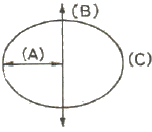
- White
- Hue
- Chroma
- Value
(정답률: 57%)
39. 연기 속으로 사라진다는 뜻으로 색을 미묘하게 연속 변화시켜 형태의 윤곽이 엷은 안개에 쌓인 것처럼 차차 사라지게 하는 기법은?
- 그라데이션(gradation)
- 데칼코마니(decalcomanie)
- 스푸마토(sfumato)
- 메조틴트(mezzotint)
(정답률: 58%)
40. 배색에 관한 일반적인 설명으로 옳은 것은?
- 가장 넓은 면적의 부분에 주로 적용되는 색체를 보조색이라고 한다.
- 통일감 있는 색채 계획을 위해 보조색은 전체 색체의 50% 이상을 동일한 색채로 사용하여야 한다.
- 보조색은 항상 무채색을 적용해야 한다.
- 강조색은 주로 작은 면적에 사용되면서 시선을 집중시키는 효과를 나타낸다.
(정답률: 74%)
3과목: 건축재료
41. 각종 색유리의 작은 조각을 도안에 맞추어 절단하여 조합해서 만든 것으로 성당의 창등에 사용되는 유리제품은?
- 내열유리
- 유리타일
- 샌드블라스트유리
- 스테인드글라스
(정답률: 82%)
42. 도로나 바닥에 깔기 위해 만든 두꺼운 벽돌로서 원료로 연화토, 도토 등을 사용하여 만들며 경질이고 흡습성이 적은 특징이 있는 것은?
- 이형벽돌
- 포도벽돌
- 치장벽돌
- 내화벽돌
(정답률: 73%)
43. 다음 중 방수성이 가장 우수한 수지는?
- 푸란수지
- 실리콘수지
- 멜라민수지
- 알키드수지
(정답률: 80%)
44. 시멘트를 대기 중에 저장하게 되면 공기 중의 습기와 탄산가스가 시멘트와 결합하여 그 품질상태가 변질되는데 이 현상을 무엇이라 하는가?
- 동상현상
- 알카리 골재반응
- 풍화
- 응결
(정답률: 70%)
45. 목재 방부제에 요구되는 성질에 관한 설명으로 옳지 않은 것은?
- 목재의 인화성, 흡수성 증가가 없을 것
- 방부처리 후 표면에 페인트칠을 할 수 있을 것
- 목재에 접촉되는 금속이나 인체에 피해가 없을 것
- 목재에 침투가 되지 않고 전기전도율을 감소시킬 것
(정답률: 66%)
46. 철강제품 중에서 내식성, 내마모성이 우수하고 강도가 높으며, 장식적으로도 광택이 미려한 Cr-Ni 합금의 비자성 강(鋼)은?
- 스테인리스강
- 탄소강
- 주철
- 주강
(정답률: 76%)
47. 목재의 부패조건에 관한 설명으로 옳은 것은?
- 목재에 부패균이 번식하기에 가장 최적의 온도조건은 35~45℃로서 부패균은 70℃까지 대다수 생존한다.
- 부패균류가 발육가능한 최저습도는 65% 정도이다.
- 하등생물인 부패균은 산소가 없으면 생육이 불가능하므로, 지하수면 아래에 박힌 나무말뚝은 부식되지 않는다.
- 변재는 심재에 비해 고무, 수지, 휘발성 유지 등의 성분을 포함하고 있어 내식성이 크고, 부패되기 어렵다.
(정답률: 65%)
48. 재료의 열팽창계수에 관한 설명으로 옳지 않은 것은?
- 온도의 변화에 따라 물체가 팽창ㆍ수축하는 비율을 말한다.
- 길이에 관한 비율인 선팽창계수와 용적에 관한 체적팽창계수가 있다.
- 일반적으로 체적팽창계수는 선팽창계수의 3배이다.
- 체적팽창계수의 단위는 W/mㆍK이다.
(정답률: 55%)
49. 보통포틀랜드시멘트 제조 시 석고를 넣는 주목적으로 옳은 것은?
- 강도를 높이기 위하여
- 균열을 줄이기 위하여
- 응결시간 조절을 위하여
- 수축팽창을 줄이기 위하여
(정답률: 58%)
50. 인조석바름의 반죽에 필요한 재료를 가장 옳게 나열한 것은?
- 백색포틀랜드시멘트, 종석, 강모래, 해초풀, 물
- 백색포틀랜드시멘트, 종석, 안료, 돌가루, 물
- 백색포틀랜드시멘트, 강자갈, 강모래, 안료, 물
- 백색포틀랜드시멘트, 강자갈, 해초풀, 안료, 물
(정답률: 53%)
51. 한 번에 두꺼운 도막을 얻을 수 있으며 넓은 면적의 평판도장에 최적인 도장 방법은?
- 브러시칠
- 롤러칠
- 에어스프레이
- 에어리스 스프레이
(정답률: 69%)
52. 플라스틱 재료의 일반적인 성질에 관한 설명으로 옳지 않은 것은?
- 플라스틱의 강도는 목재보다 크며 인장강도가 압축강도보다 매우 크다.
- 플라스틱은 상호간 접착이나 금속, 콘크리트, 목재, 유리 등 다른 재료에도 부착이 잘 되는 편이다.
- 플라스틱은 일반적으로 전기절연성이 양호하다.
- 플라스틱은 열에 의한 팽창 및 수축이 크다.
(정답률: 67%)
53. 단열모르타르에 관한 설명으로 옳지 않은 것은?
- 바닥, 벽, 천장 등의 열손실 방지를 목적으로 사용된다.
- 골재는 중량골재를 주재료로 사용한다.
- 시멘트는 보통포틀랜드시멘트, 고로슬래그시멘트 등이 사용된다.
- 구성재료를 공장에서 배합하여 만든 기배합미장재료로서 적당향의 물을 더하여 반죽상태로 사용하는 것이 일반적이다.
(정답률: 51%)
54. 특수도료 중 방청도료의 종류와 가장 거리가 먼 것은?
- 인광도료
- 알루미늄 도료
- 역청질 도료
- 징크로메이트 도료
(정답률: 43%)
55. 금속재에 관한 설명으로 옳지 않은 것은?
- 알루미늄은 경량이지만 강도가 커서 구조재료로도 이용된다.
- 두랄루민은 알루미늄 합금의 일종으로 구리, 마그네슘, 망간, 아연 등을 혼합한다.
- 납은 내식성이 우수하나 방사선 차단 효과가 적다.
- 주석은 단독으로 사용하는 경우는 드물고, 철판에 도금을 할 때 사용된다.
(정답률: 69%)
56. 투명도가 높으므로 유기유리라는 명칭이 있고 착색이 자유로워 채광판, 도어판, 칸막이판 등에 이용되는 것은?
- 아크릴수지
- 알키드수지
- 멜라민수지
- 폴리에스테르수지
(정답률: 79%)
57. 점토 벽돌(KS L 4201)의 시험방법과 관련된 항목이 아닌 것은?
- 겉모양
- 압축강도
- 내충격성
- 흡수율
(정답률: 47%)
58. 다음 석재 중 압축강도가 일반적으로 가장 큰 것은?
- 화강암
- 사문암
- 사암
- 응회암
(정답률: 71%)
59. 목재에 관한 설명으로 옳지 않은 것은?
- 춘재부는 세포막이 얇고 연하나 추재부는 세포막이 두껍고 치밀하다.
- 심재는 목질부 중 수심 부근에 위치하고 일반적으로 변재보다 강도가 크다.
- 널결은 곧은결에 비해 일반적으로 외관이 아름답고 수축변형이 적다.
- 4계절 중 벌목의 가장 적당한 시기는 겨울이다.
(정답률: 58%)
60. 다음 중 지하빙수나 아스팔트 펠트 삼투용(滲透用)으로 쓰이는 것은?
- 스트레이트 아스팔트
- 블로운 아스팔트
- 아스팔트 컴파운드
- 콜타르
(정답률: 41%)
4과목: 건축일반
61. 실내공간에 서있는 사람의 경우 주변 환경과 지속적으로 열을 주고 받는다. 인체와 주변 환경과의 열전달 현상 중 그 영향이 가장 적은 것은?
- 전도
- 대류
- 복사
- 증발
(정답률: 40%)
62. 다음 중 방염대상물품에 해당하지 않는 것은?
- 종이벽지
- 전시용 합판
- 카펫
- 창문에 설치하는 블라인드
(정답률: 78%)
63. 한국의 목조건축에서 기둥 밑에 놓아 수직재인 기둥을 고정하는 것은?
- 인방
- 주두
- 초석
- 부연
(정답률: 62%)
64. 소방시설법령에 따른 소방시설의 분류명칭에 해당되지 않는 것은?
- 소화설비
- 급수설비
- 소화활동설비
- 소화용수설비
(정답률: 71%)
65. 건축물에서 자연 채광을 위하여 거실에 설치하는 창문등의 면적은 얼마 이상으로 하여야 하는가?
- 거실 바닥면적의 5분의 1
- 거실 바닥면적의 10분의 1
- 거실 바닥면적의 15분의 1
- 거실 바닥면적의 20분의 1
(정답률: 79%)
66. 소방시설법령에서 정의하는 무창층이 되기 위한 개구부 면적의 합계 기준은? (단, 개구부란 아래 요건을 충족)
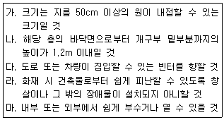
- 해당 층의 바닥면적의 1/20 이하
- 해당 층의 바닥면적의 1/25 이하
- 해당 층의 바닥면적의 1/30 이하
- 해당 층의 바닥면적의 1/35 이하
(정답률: 68%)
67. 벽돌구조의 특징으로 옳지 않은 것은?
- 풍하중, 지진하중 등 수평력에 약하다.
- 목구조에 비해 벽체의 두께가 두꺼우므로 실내면적이 감소한다.
- 고층 건물에는 적용이 어렵다.
- 시공법이 복잡하고 공사비가 고가인 편이다.
(정답률: 71%)
68. 결로에 관한 설명으로 옳지 않은 것은?
- 실내공기의 노점온도보다 벽체표면온도가 높을 경우 외부결로가 발생할 수 있다.
- 여름철의 결로는 단열성이 높은 건물에서 고온다습한 공기가 유입될 경우 많이 발생한다.
- 일반적으로 외단열 시공이 내단열 시공에 비하여 결로 방지기능이 우수하다.
- 결로방지를 위하여 환기를 통하여 실내의 절대습도를 낮게 한다.
(정답률: 43%)
69. 피난층 또는 지상으로 통하는 직통계단을 2개소 이상 설치해야 하는 용도가 아닌 것은? (단, 피난층 외의 층으로써 해당 용도로 쓰는 바닥면적의 합계가 500m2일 경우)
- 단독주택 중 다가구주택
- 문화 및 집회시설 중 전시장
- 제2종 근린생활시설 중 공연장
- 교육연구시설 중 학원
(정답률: 39%)
70. 그리스 파르테논(Parthenon)신전에 관한 설명으로 옳지 않은 것은?
- 그리스 아테네의 아크로폴리스 언덕에 위치하고 있다.
- 기원전 5세기경 건축가 익티누스와 조각가 피디아스의 작품이다.
- 아테네의 수호신 아테나를 숭배하기 위해 축조하였다.
- 대부분 화강석 재료를 사용하여 건축하였다.
(정답률: 66%)
71. 소방시설법령에서 규정하고 있는 비상콘센트설비를 설치하여야 하는 특정소방대상물의기준으로 옳은 것은?
- 층수가 7층 이상인 특정소방대상물의 경우에는 7층 이상의 층
- 층수가 8층 이상인 특정소방대상물의 경우에는 8층 이상의 층
- 층수가 10층 이상인 특정소방대상물의 경우에는 10층 이상의 층
- 층수가 11층 이상인 특정소방대상물의 경우에는 11층 이상의 층
(정답률: 67%)
72. 건축물 내부에 설치하는 피난계단의 구조기준으로 옳지 않은 것은?
- 계단은 내화구조로 하고 피난층 또는 지상까지 직접 연결되도록 한다.
- 계단실에는 예비전원에 의한 조명설비를 한다.
- 계단실의 실내에 접하는 부분의 마감은 난연재료로 한다.
- 건축물의 내부에서 계단실로 통하는 출입구의 유효너비는 0.9m 이상으로 한다.
(정답률: 72%)
73. 문화 및 집회시설 중 공연장의 개별관람석 바닥면적이 550m2인 경우 관람석의 최소 출구개수는? (단, 각 출구의 유효너비는 1.5m로 한다.)
- 2개소
- 3개소
- 4개소
- 5개소
(정답률: 53%)
74. 목재의 이음에 관한 설명으로 옳지 않은 것은?
- 엇걸이 산지이음은 옆에서 산지치기로 하고, 중간은 빗물리게 한다.
- 턱솔이음은 서로 경사지게 잘라 이은 것으로 목질 또는 볼트 죔으로 한다.
- 빗이음은 띠장, 장선이음 등에 사용한다.
- 겹친이음은 2개의 부재를 단순히 겹쳐대고 큰 못ㆍ볼트 등으로 보강한다.
(정답률: 48%)
75. 다음은 건축허가 등을 할 때 미리 소방본부장 또는 소방서장의 동의를 받아야 하는 건축물 등의 범우이에 관한 내용이다. 빈칸에 들어갈 내용을 순서대로 옳게 나열한 것은? (단, 차고ㆍ주차장 또는 주차용도로 사용되는 시설)
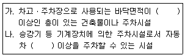
- 100m2, 20대
- 200m2, 20대
- 100m2, 30대
- 200m2, 30대
(정답률: 57%)
76. 철근콘크리트 구조로서 내화구조가 아닌 것은?
- 두께가 8cm 인 바닥
- 두께가 10cm 인 벽
- 보
- 지붕
(정답률: 57%)
77. 철골조에서 그림과 같은 H형강의 올바른 표기법은?
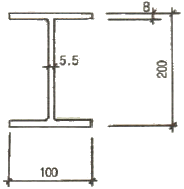
- H-100×200×5.5×8
- H-100×200×8×5.5
- H-200×100×5.5×8
- H-200×100×8×5.5
(정답률: 54%)
78. 급수ㆍ배수 등의 용도를 위하여 건축물에 설치하는 배관설비의 설치 및 구조에 관한 기준으로 옳지 않은 것은?
- 배관설비의 오수에 접하는 부분은 내수재료를 사용할 것
- 지하실 등 공공하수도로 자연배수를 할 수 없는 곳에는 배수용량에 맞는 강제배수시설을 설치할 것
- 우수관과 오수관은 통합하여 배관할 것
- 콘크리트구조체를 관통할 경우에는 구조체에 덧관을 미리 매설하는 등 배관의 부식을 방지하고 그 수선 및 교체가 용이하도록 할 것
(정답률: 71%)
79. 방염성능기준 이상의 실내장식물 등을 설치하여야 하는 특정소방대상물에 해당되지 않는 것은?
- 근린생활시설 중 체력단련장
- 방송통신시설 중 방송국
- 의료시설 중 종합병원
- 층수가 11층인 아파트
(정답률: 65%)
80. 관계공무원의 의해 실시되는 소방안전관리에 관한 특별조사의 항목에 해당하지 않는 것은?
- 특정소방대상물의 소방안전관리 업무 수행에 관한 사항
- 특정소방대상물의 소방계획서 이행에 관한 사항
- 특정소방대상물의 자체점검 및 정기적 점검 등에 관한 사항
- 특정소방대상물의 소방안전관리자의 선임에 관한 사항
(정답률: 68%)